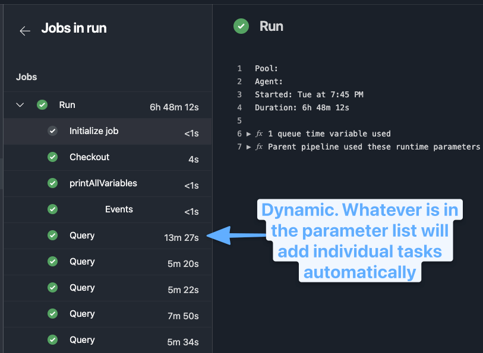

Azure Pipelines Template Iteration
Templates
This isn't meant to be an exhaustive template overview. I'm just going to give an example of what I found useful as I've been meaning to leverage templates for a while and finally got around to having a great use for it.
My Use Case
I am a heavy user of InvokeBuild. It's a very robust task runner tool that I've used to coordinate many project oriented actions, similar to Make, but also DevOps oriented work like AWS SSM tasks and more.
In this scenario, I needed to run a query across: multiple queries -> across multiple servers -> across hundreds of databases --> and finally produce a single jsonl artifact3
Originally, I did this in a single Invoke-Build task, but what I discovered was with a long running job I wanted to have a bit more granular view of the progress and percentage complete. This also helped me visualize a bit more what specific queries cost the most in time.
Azure Pipeline Construction
I've extracted out the key essential pieces here to explain the core concepts.
Build Number
Build name is dynamically generated. This is my standard format for most pipelines, but you can adjust the naming with parameters (which are a compile time, before runtime) as well to add other descriptive values.
{{< admonition type="Info" title="Parameters" open="false">}}
Parameters are evaluated at compile time, rather than during the build run phase.
This means you can use something like the example below to update the queued build name on run.
name: $(BuildDefinitionName).$(Configuration).$(Build.QueuedBy).${{ parameters.SELECTED_VALUE }}.$(DayOfYear)$(Rev:.r)
Using a build variable might require updating the build name if the build variable isn't set on queue, as it won't pick it up without this command.
{{< /admonition >}}
Trigger
Setting the following values ensures this is a manual pipeline. Otherwise, once the pipeline is linked it would automatically trigger on PR and main branch commits.
There's other customization in terms of filtering triggers based on the path of the changed file, branch names, batching changes with multiple commits, and more in the docs.
Parameters
Designed for user input, the parameters provide a good experience in customizing runs easily at queue time.
This can be a full yaml defined object, but my examples here are the simple ones.
parameters:
- name: Configuration
type: string
default: qa
values:
- qa
- prod
- name: QUERY_NAME
type: string
default: 'no-override'
displayName: If no-override, then run everything, else specify a specific query to run.
- name: SERVER_LIST
type: string
default: 'tcp:123.123.123.1;tcp:123.123.123.2' #split this in the task code
displayName: Example Input that InvokeBuild would split to array
Variables
Parameters won't be set in the environment variables, so if you want these exposed to the next tasks, you have to set the variable from the parameter.
This command will now mean the tasks run will have a $ENV:CONFIGURATION set automatically.
Job
The pipelines allow you to only put the level of complexity you need in your runbook.
This means if you just have tasks, you can put those, but if you have a deployment job then you can include tasks in the appropriate child section.
For my default template here I like control of multi-stage yaml builds, so I use the following format.
jobs:
- deployment: my-query-runbook
displayName: Run Query in ${{ parameters.Configuration }}
timeoutInMinutes: 480
continueOnError: false
environment: 'my-environment-${{ parameters.Configuration }}' #could setup approval requirements for environments by specifying a name like `my-environment-prod` requires manual approval or is limited to specific folks
pool:
name: my-own-internal-agent # OR use hosted container config if you want
demands:
- agent.os -equals Windows_NT # OR use Ubuntu if you have linux container. This is customizable to help you filter to desired agent if working with private subnets etc.
- env -equals ${{ parameters.Configuration }}
strategy:
runOnce:
deploy:
steps:
- checkout: self
persistCredentials: true
fetchDepth: 0 # Unlimited in case you need more history
clean: false
- task: printAllVariables@1
Using the Template
At the same level as the task, the template can be called.
- template: templates/run-query.yml
parameters:
SERVER_LIST: ${{ parameters.QUERY_NAME}}
${{ if ne(parameters.QUERY_NAME,'no-override') }}:
querynames:
- '${{ parameters.QUERY_NAME }}'
${{ if eq(parameters.QUERY_NAME,'no-override') }}:
querynames:
- 'Query1'
- 'Query2'
- 'Query3'
A few concepts to unpack:
- Parameters must be passed into the template, as any build variables automatically in scope.
- Variable reuse 6 has it's own set of quirks with templates.
Within a template expression, you have access to the parameters context that contains the values of parameters passed in. Additionally, you have access to the variables context that contains all the variables specified in the YAML file plus many of the predefined variables (noted on each variable in that topic). Importantly, it doesn't have runtime variables such as those stored on the pipeline or given when you start a run. Template expansion happens very early in the run, so those variables aren't available. 4
- Expressions allow some conditional evaluation and change in behavior of the pipeline.5
Template Structure
parameters:
- name: 'QUERY_NAME'
type: object
default: {}
- name: 'CONFIGURATION'
type: string
- name: 'SERVER_LIST'
type: string
Now that we have the parameters defined, we can use a steps block and loop on the QUERY_NAME parameter that could be a single or multiple entry input.
steps:
- ${{ each query in parameters.QUERY_NAME }}:
- task: PowerShell@2
displayName: Query ${{ query }}
inputs:
targetType: inline
script: |
&./build.ps1 -Tasks 'run-my-query' -Configuration '${{ parameters.CONFIGURATION }}' -QueryName '${{ query }}'
errorActionPreference: 'Stop'
pwsh: true
failOnStderr: true
workingDirectory: $(Build.SourcesDirectory)
env:
OPTIONAL_ENV_VARS: ${{ parameters.EXAMPLE }}
This could also be slightly altered if you don't want inline scripts to use the following.
filePath: build.ps1
argumentList: "-Tasks 'run-my-query' -Configuration '${{ parameters.CONFIGURATION }}' -QueryName '${{ query }}'"
Reporting Progress
As the task runs, you can output percent complete so that your task shows how far along it is. I find this great for long running tasks, helping me check on them and know it's not stuck.
Final Result
This allows the job to set dynamically the individual tasks to run, report progress on each, and log the timing.
While it could be run as a single task, I prefer this type of approach because a long running job is now much more easily tracked as it progresses.

Further Features
Templates allow for a wide range of usage and flexibility that I've barely touched. Selecting entire sets of tasks at runtime, variable sets, and more are all available.
This was a first round usage of them, as I really want to leverage the potentional for DRY with pipelines more, and templates offer a really flexible option to reusing core code across multiple pipelines without having to version each individually and try to keep them up to date.
More Resources
- Azure DevOps Tips: “Each†Loops. Applying DRY principle in CI/CD — Using… | by Jordan Lee | Medium
- YAML schema - Azure Pipelines | Microsoft Docs 1
- Predefined variables - Azure Pipelines | Microsoft Docs 2
- Expressions 5